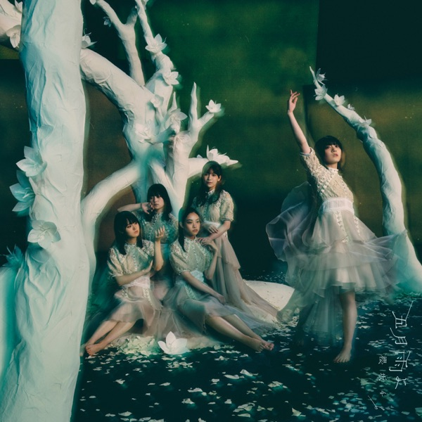

サカミチ
サカミチI'm inあいむいん

初収録リリース「五月雨よ」のジャケット
櫻坂46
発売日：2022-04-06
収録：五月雨よ（4thSG）
種別：BACKS曲
センター：土生瑞穂
作曲：梅野悠大
編曲：梅野悠大
ライブ披露：36件
フォーメーション
上が後列、下が前列です。色付きがセンター。（参考データに基づく）
 遠藤光莉
遠藤光莉 関有美子
関有美子 齋藤冬優花
齋藤冬優花 幸阪茉里乃
幸阪茉里乃 尾関梨香
尾関梨香 大沼晶保
大沼晶保 井上梨名
井上梨名 上村莉菜
上村莉菜 原田葵
原田葵 増本綺良
増本綺良 武元唯衣
武元唯衣 大園玲
大園玲 土生瑞穂
土生瑞穂 松田里奈
松田里奈参加メンバー（14名）
上村莉菜、尾関梨香、齋藤冬優花、土生瑞穂、原田葵、井上梨名、遠藤光莉、大園玲、大沼晶保、幸阪茉里乃、関有美子、武元唯衣、増本綺良、松田里奈
この曲が披露されたライブ（36件）
新しい順に20件まで表示しています（全36件）。